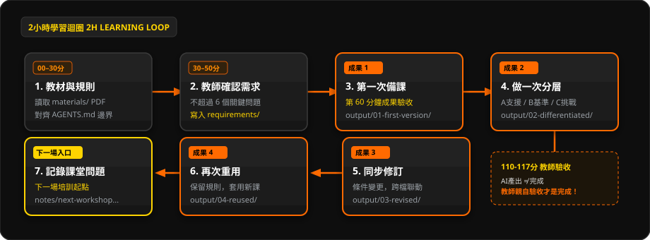

🗺️ 2 小時 AI Agent 備課學習迴圈總覽圖

💡 提示：在投影幕前點擊此圖，可直接切換至 85% 視窗雙欄黑板控制台，配合雷射筆 (L) 與畫筆 (P) 進行全班引導。
🏛️ 工作坊四大核心基石
🔍 放大
⏱️ 2 小時
精準實操節奏
120 分鐘精確切分為 11 階段，拒絕空洞理論宣講。第 60 分鐘全員跨越備課合格線，前呼後應步步留痕。
🔍 放大
📄 1 個教材
守住數學事實
以校本真實教材 P5-分數加減法.pdf 為唯一事實源。嚴禁超綱與憑空捏造，牢守數學概念與算理本質。
🔍 放大
🔄 4 次循環
Agent 備課迭代
①第一次備課 ➔ ②同一目標分層 ➔ ③跨檔案同步修訂 ➔ ④換教材秒級重用。經歷完整的工程級工作循環。
🔍 放大
📦 1 個專案
長效校本資產
擺脫一次性聊天，建立以 AGENTS.md 為守則的結構化專案。日後換新單元直接繼承成熟備課流水線！
🎯 本次工作坊標準產出物清單 (output/ 目錄)
老師離場時，專案資料夾內將累積一套完整、真實、明天就能拿進課堂的校本教學資產：
| 產出階段 | 成果檔案路徑 | 主要內容與教師驗收標準 | 備註 |
|---|---|---|---|
| TASK 1｜第一次備課 | output/01_課堂備課草案.md |
40分鐘流程（導入、講解、引導、練習、總結、Exit Ticket）、3-4個學習目標、常見錯誤迷思 | 第60分鐘合格線 |
| TASK 2｜學生分層 | output/02_三層學生工作紙.md |
A 基礎層（多支架）、B 標準層（本課目標）、C 挑戰層（推理與解釋，不超綱） | 對應同一核心算理 |
| TASK 2｜教師答案 | output/03_教師答案及錯因.md |
正確答案、解題方法、常見錯誤、教師追問句；題號與學生版 100% 對齊 | 左右分屏核對 |
| TASK 3｜同步修訂 | output/04_同步修改紀錄.md |
試教回饋修訂紀錄（第3題降難度、第6題簡化語言、C層加推理題），記錄連鎖影響範圍 | 跨檔案連鎖同步 |
| TASK 4｜新教材重用 | output/reuse/*.md |
換入 P5-小數乘法.pdf，重用相同架構產出新課教案、三層工作紙、答案版 |
驗證工作流重用性 |
| 成果封裝｜交付文件 | output/final/*.docx |
三份 Word 檔案（教案、學生工作紙、答案版），適合 A4 列印，學生版絕無答案 | 若Word故障保留MD |
| 離場憑證｜真實痛點 | MY-NEXT-TASK.md |
回答 3 個問題：最花時間的教學工作、下次交給 Agent 的任務、第二場所帶真實教材 | 第二場培訓直接輸入 |
💡 三大教學思維關鍵轉折
🔍 放大黑板
轉折 ①：普通聊天 vs Agent 專案
❌ 普通聊天視窗：每次開新對話都要重打「我是小學數學老師、請用繁體中文、不要超綱、請記得A層要有提示…」。用完即忘，無法跨對話累積。
✅ OpenCode Agent 專案：所有校本規範寫入
AGENTS.md 作為「AI 助教長期守則」。無論開啟幾次對話，AI 永久遵守規則，越用越省心！
🔍 放大黑板
轉折 ②：假分層 vs 真分層
❌ 假分層（偷懶模式）：基礎題是「1/4 + 1/6」，挑戰題只是把數字改成「1/99 + 1/100」。計算更折磨，但認知深度與思維層次毫無提升！
✅ 真分層（教學思維）：三層對應同一核心算理！A層給予幾何圖形支架；B層掌握正常運算；C層增加推理、解釋、錯誤診斷與情境判斷。
🔍 放大黑板
轉折 ③：錯誤修改 vs Agent 同步
❌ 傳統修改：試教後發現第 3 題太難，要求 AI 重新生成。結果題號大亂、答案不同步、原本優秀的第 5 題也被改掉，教師苦不堪言。
✅ Agent 同步修改：先要求 AI 出具「變更影響清單」，確認牽動範圍後，只修訂受影響位置，並跨文件同步更新學生版、答案版與教案！
🔍 放大黑板
轉折 ④：複製提示詞 vs 重用工作流
❌ 單純背 Prompt：離開工作坊後只剩下一堆零散指令，一旦換了教學課題就不知道如何拼裝，遇到問題依舊卡關。
✅ 重用成熟 Workflow：教材會換、單元會換；但備課結構、分層理念與質檢方法完全可以複用。換上新 PDF，5 分鐘搞定整套新課材料！
📁 Math-Agent-Workshop 專案結構與權限邊界

🔒 安全約束：
materials/ 唯讀保護原始教材；output/ 為唯一寫入目錄；AGENTS.md 定義長期守則。